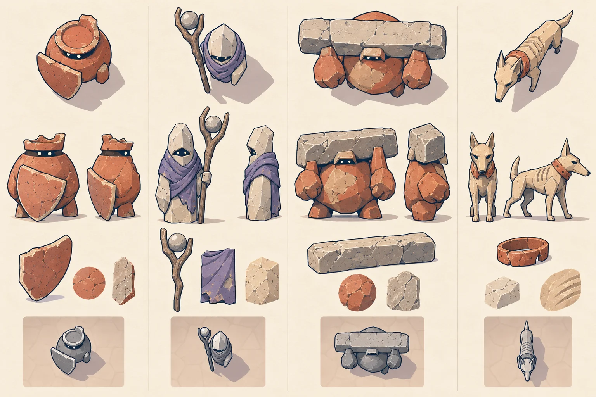
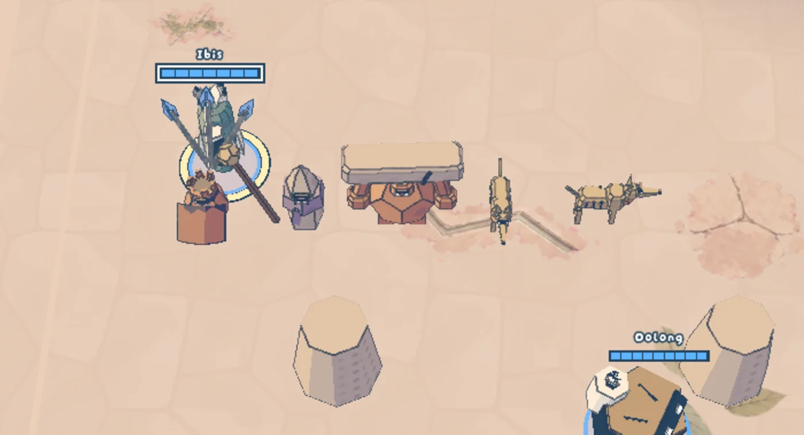
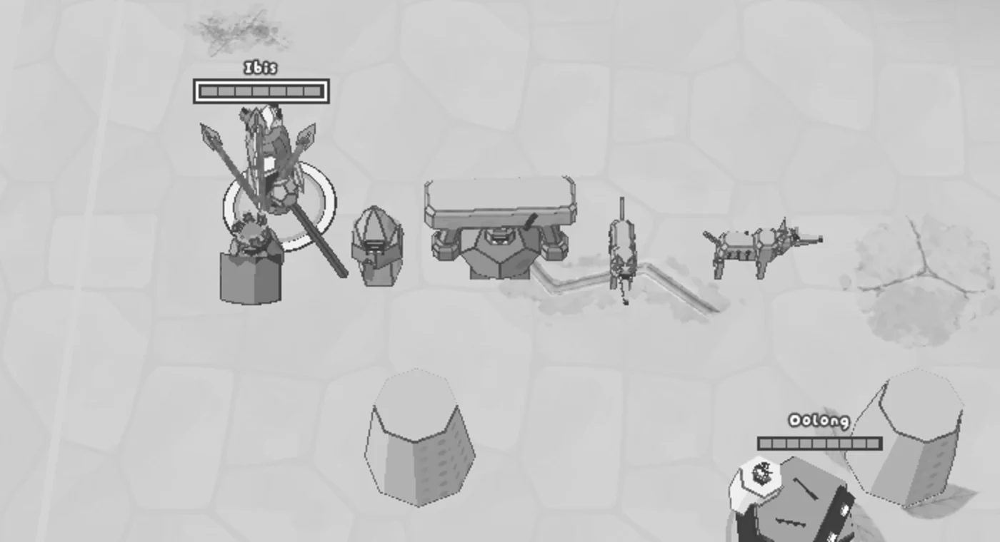
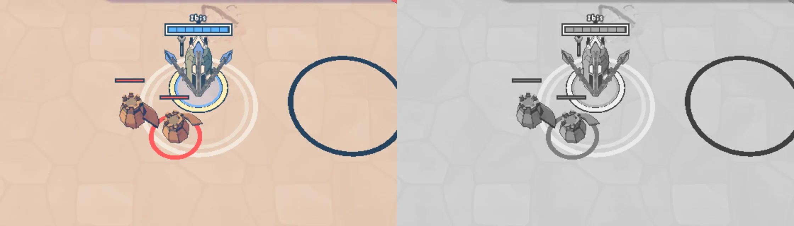

Altamesa's guards in clay and stone
To review · 2026-11-01 · thr_inrv7fx4ha
Do the four servants read as the Wardens' own, and apart from each other at the match camera, in colour and in gray?




To review · 2026-11-01 · thr_inrv7fx4ha
Do the four servants read as the Wardens' own, and apart from each other at the match camera, in colour and in gray?



